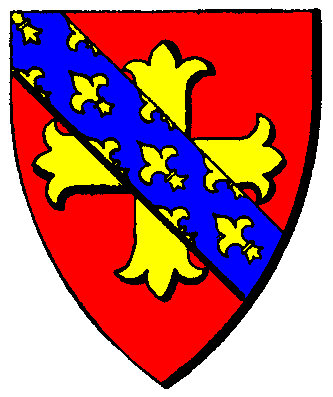

| Übersicht,
Newbies und Fragen |
|
Gaukeln im Gasthaus
|
| Mazaro (RIP) |
Schlussendlich habe auch ich hier meine Antwort gefunden. 500 AP Sperre... nun, wenn das GH auf dem Weg liegt, dann lohnt es sich halt immer mal halt zu machen und dort kurz zu gaukeln.
Ich versuch es einfach mal eine Zeit lang. Vielleicht macht es ja Spaß. :) |
02.12.05 16:35

|
|
| Linduriel (RIP) |
Gruppenskill zählt
immerhin kriege ich schon so zwischen 7 und 10 k ^^ kleines Taschengeld fals ich mich mit der kohle verrechnet habe ^^ |
04.12.05 18:33
|
|
| Daromir S. Cobar (RIP) |
na was denn nun *gg*
Brian Raistlin: "Es ist definitiv der höchste Einzelskill beim Gaukeln im Gasthaus"
Linduriel: "Gruppenskill zählt" |
04.12.05 21:47
|
|
| Lancelot (RIP) |
könnte lindu ja einfach testen, indem er die chars auswechselt und nur einen mit dem gaukelskill inner gruppe hat und dann paar mal gaukeln geht... |
05.12.05 11:44
|
|
| Nalon din Adun (RIP) |
Ein paar Mal fällt noch unter statistische Fehler.
Ich würde trotzdem auf Gruppenskill tippen, zumindest mal beim Sammeln.
Im GH ließe es sich nur vergleichen, wenn auf Dauer jemand, der alle Chars skillt, seine Ergebibnisse mit wem vergleicht, der nur 1 Char skillt und man dann die Erträge vergleicht. |
06.12.05 10:57
|
|
Brian Raistlin
 |
Beim Schneemänner ernten denke ich ist es zu 100 % der Gruppenskill, wie bei Holz, Fisch, Fleisch,....
Beim Gh ist es und da bin ich mir inzwischen ziemlich sicher wie beim Taschendiebstahl der höchste Einzelskill ( wenn nicht würde ich mich einfach mal schwarz ärgern über 2 Monate falsch skillen und vor Ärgerniss die Wand hochkrabbeln ).
Also ich kann mal einfach ein paar Ergebnisse vom Ghgaukeln zur Verfügung stellen, die ich noch so im Kopf habe für meinen Einzelsklill:
Bei 5 Skill warns um die 10 GS, bei 13 glaub ca. 80 - 110 GS, bei 20 ca. 250 GS, bei 25 um die 300 - 400 GS und jetzt bei 34 um die 700 - 800 GS im Schnitt. Vielleicht hat ja jemand noch Werte im Kopf, dann hätte mans ja schon. |
07.12.05 1:48
 |
|
| Lancelot (RIP) |
ne, paar mal gaukeln wäre in diesem fall nicht mit einem statischen fehler zu vergleichen, da die beiden bezugsgrößen seeehr weit auseinader liegen würden.
zum einen hätte ich einen gruppenskill von (wie viel chars has du?) 6-7 chars und bei dem anderen nur den skill von einem, also würden sich z.b. 30 und 210 gegenüberstehen als werte. da wird der unterschied auch mit wenigen versuchen messbar. |
07.12.05 10:56
|
|
| Mazaro (RIP) |
Hallo Leute,
seit ihr bei der 500 AP Sperre sicher? Ich habe es gerade ausprobiert. Kann nach einmal gaukeln und 7-15x 5fach ernten nicht noch einmal Gaukeln. Er meint immer, dass ich die immer gleichen Tricks aufführe und das langweilig sei...
10x 5fach ernten sind schon 800 AP ...
Kann mir jemand sagen, was sich falsch machen würde, bzw. ob die AP? Zählt vielleicht die Zeit? oder noch mehr AP, was die Sache dann wirklich unnsinnig machen würde. |
20.12.05 14:22
|
|
| Elder von Adlerfeste (RIP) |
Moeglicherweise hast du E-Drinks verwendet?
APs aus E-Drinks und Energieschueben muessen verbraucht werden bevor die Zaehlung der 500 AP beginnt. |
20.12.05 16:58
|
|
Übersicht,
Newbies und Fragen
|